Gameplay Complexity and Building Blocks
游戏玩法的挑战
-
多系统之间的协作

-
即便在同一游戏中，可能也有多个游戏玩法

-
快速迭代
- 例子：Epic 称他们借助《堡垒之夜》的基本框架，在大约两个月内迅速开发出一个大逃杀模式
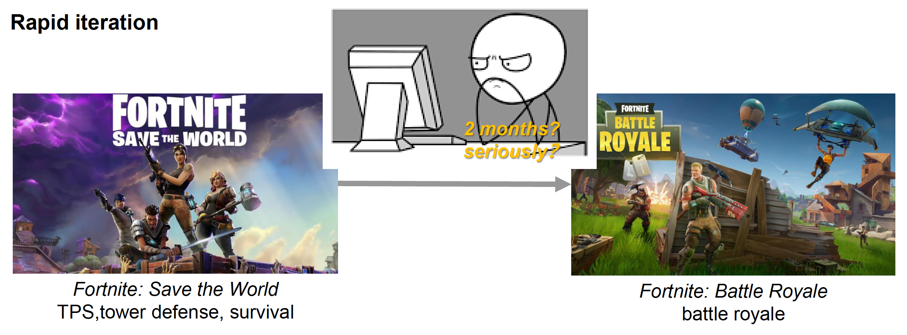
Event Mechanism
我们早在第三讲就已经介绍过事件的大致原理。若有遗忘，建议先点击链接回顾后再继续往下阅读，下面将不再赘述。
更进一步，在游戏引擎中常用的一种设计模式是发布-订阅模式(publish-subscribe pattern)。
- 发布者(publisher)将发布的消息（事件）分类
- 订阅者(subscriber)只接收感兴趣的消息（事件），无需知道这些消息来自哪些发布者
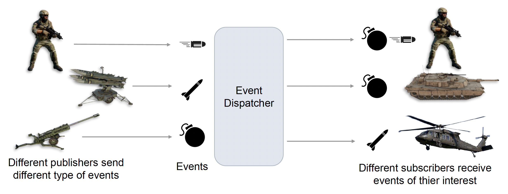
发布-订阅模式由三部分组成：
- 事件定义(event definition)
- 回调注册(callback registration)
- 事件分发(event dispatching)
Event Definition
事件的定义包括：
- 事件类型(type)
- 事件参数(argument)
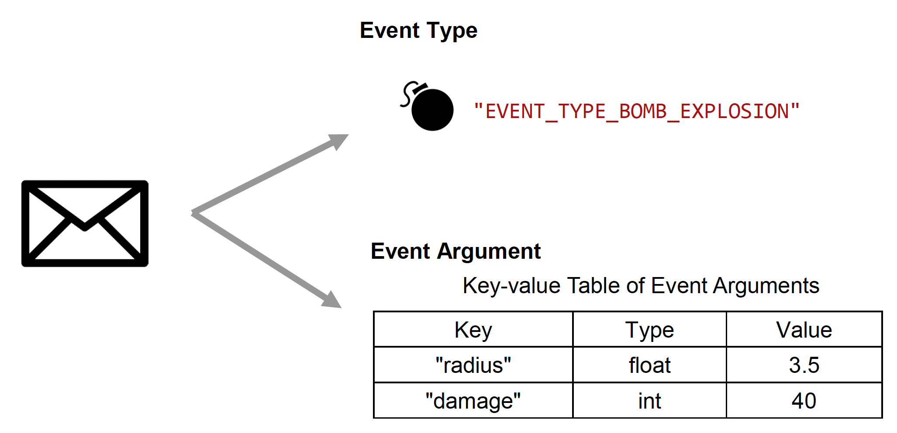
由于玩法是随时变化的，所以利用硬编码实现事件的定义是不太现实的。

而在 UE 中，事件定义可通过上一讲介绍的反射机制和代码生成器，以可视化的方式很容易地得到实现。

但我们还得考虑一个问题：如果设计师每对某个事件做修改，那么所有代码就得重新编译一遍，这样看起来很麻烦啊。仍然以 UE 为例，它的做法是：通过上述方法定义的事件本质上还是 C++ 代码，如果对事件做了修改，那么仅需重新编译对应的代码，在引擎运行时将其看作一段 DLL 注入进去。其他引擎也有各自的解决方案，比如通过别的脚本语言定义事件，这里就不展开了。
Callback Registration
回调(callback)函数是一种任何作为其他代码参数传递的可执行代码引用。

回调函数的注册和执行的时间点是不同的。正常的时间顺序都是先注册后执行的。
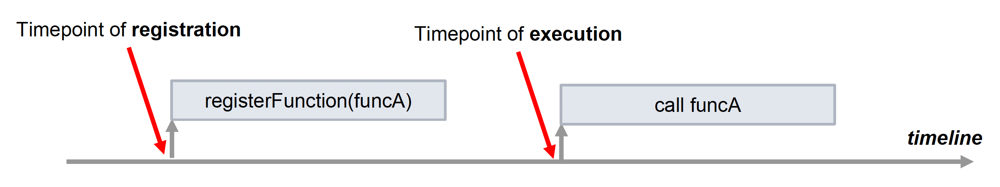
引擎中一个很容易出现的问题是对象的生命周期和回调函数安全性。比如一个对象已经被删掉了，但由于代码设计缺陷，在这之后仍然调用了一个和该对象相关的回调函数。此时原本表示该对象的变量是一个悬挂指针，因此调用回调函数后程序就很有可能崩溃掉。

解决方案有：
-
强引用(strong reference)：确保在删除对象之前注销回调函数，以避免内存泄漏问题

- 问题：要求过于严格，导致留在内存中的东西越来越多，所以现在很少这么做了
-
弱引用(weak reference)：允许直接删除对象，但每次调用回调函数前会先检查其依赖的对象是否存在
很像 C++ 的智能指针

Event Dispatching
事件分发是指向合适的目的地发送事件的功能。

分发的实现方法有：
-
即时(immediate)分发：父函数在回调函数返回后立即返回
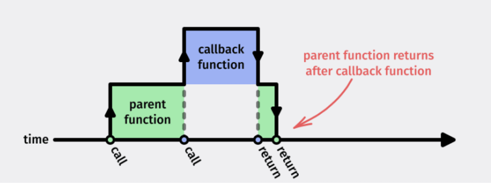
-
问题：
-
假如一枚炸弹爆炸了（一个事件），那它会引爆周围所有的炸弹，以此类推，这样回调函数的调用栈会变得相当深
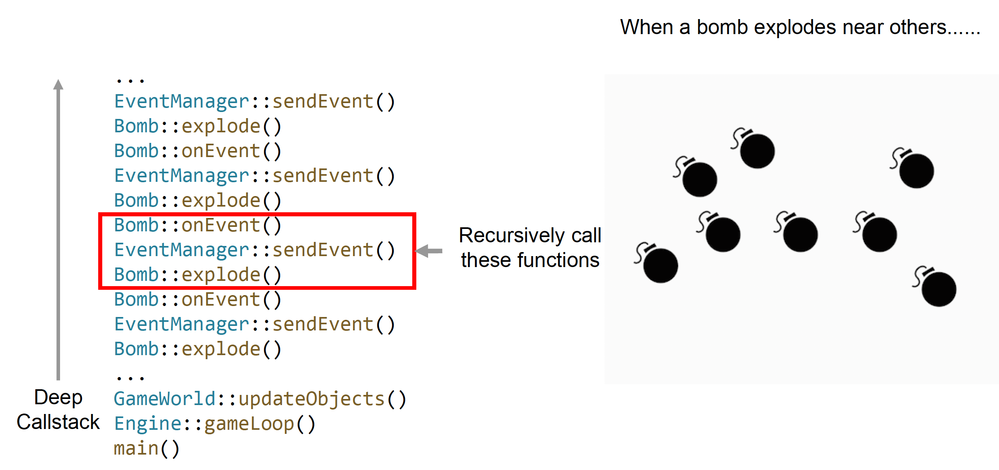
-
被其他函数阻塞：假如子弹击中角色，这引发的一个事件是流血效果，但这个粒子效果无法瞬间完成，因此会阻塞后续函数的进行，从而导致游戏帧率不稳定
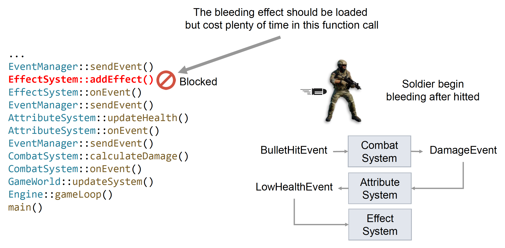
-
难以并行化：函数调用是一层套一层的，很难将这些运算并行化

-
-
-
事件队列(event queue)
-
基本实现：将事件存储在队列中，以便在未来任意时间中处理

-
通过事件序列化和反序列化（借助反射机制）来存储不同类型的事件
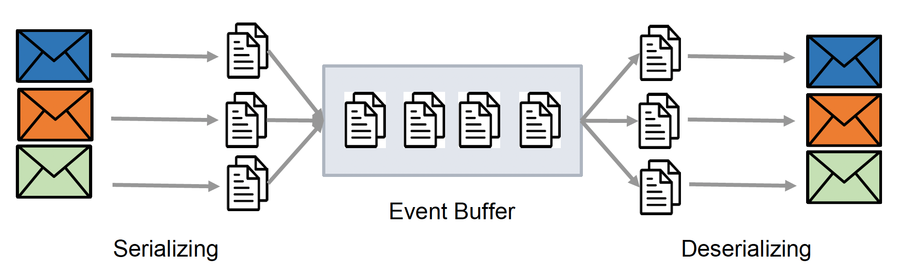
-
具体方式：
-
环形缓冲区（循环队列）

-
批处理(batching)：对事件分类，按不同类别划分多个队列，便于调试

-
-
问题：
-
时间线无法由发布者决定，也就是说无法保证事件的执行顺序

-
单帧延迟：由于事件触发的连锁反应，后面的事件可能来不及在同一帧中表现出来，得到下一帧再发生，这样的表现效果可能会怪怪的
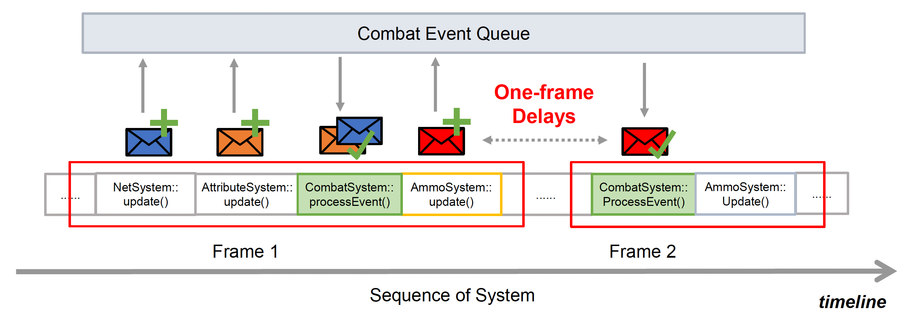
-
-
Script System
早期游戏中，游戏逻辑的编程通常采用的是编译型语言(compiled language)，且大多为 C/C++。因为这类语言不仅相比汇编语言更易使用，而且编译成机器码后执行效率也很高。
例子
void Player::tick(Float delta) {
updateDirection();
if (isKeyPressed(MOUSE_LEFT)) {
fire();
}
if (isKeyDown(KEY_W)) {
moveForward(delta);
} else if (isKeyDown(KEY_S)) {
moveBackward(delta);
}
if (isKeyDown(KEY_A)) {
moveLeftward(delta);
} else if (isKeyDown(KEY_D)) {
moveRightward(delta);
}
...
}
但随着硬件进步，游戏需求也变得愈加复杂，要求游戏逻辑能够做到快速迭代，这边暴露出编译型语言的种种弊端：
- 即便稍作修改也要重新编译整个程序
- 若代码不正确，程序很容易就崩溃
- 设计师也是游戏逻辑的开发者，虽然他们的代码基础不多，但是他们需要对游戏逻辑进行直接控制；另外艺术家也有在运行时环境下快速调整资产内容的需求
因此现代游戏开发中主要由脚本语言(script language)负责游戏逻辑的编写，因为这类语言具备以下特点：
- 支持快速迭代
- 易学易写
- 支持热更新(hot update)
- 由于在沙箱(sandbox)环境中运行，因此更稳定且崩溃更少
例子
function tick(delta)
if input_system.isKeyDown(KeyCode.W) then
self:moveForward(delta)
elseif input_system.isKeyDown(KeyCode.S) then
self:moveBackward(delta)
end
if input_system.isKeyDown(KeyCode.MouseLeft) then
self:fire(delta)
end
...
end
脚本先通过编译器被转换为字节码(bytecode)，然后在虚拟机(virtual machine)上运行。

脚本和引擎中的对象生命周期管理
-
原生引擎代码(native engine code)
- 需提供对象生命周期管理机制
- 脚本使用原生对象时不太安全（因为可能会被析构）
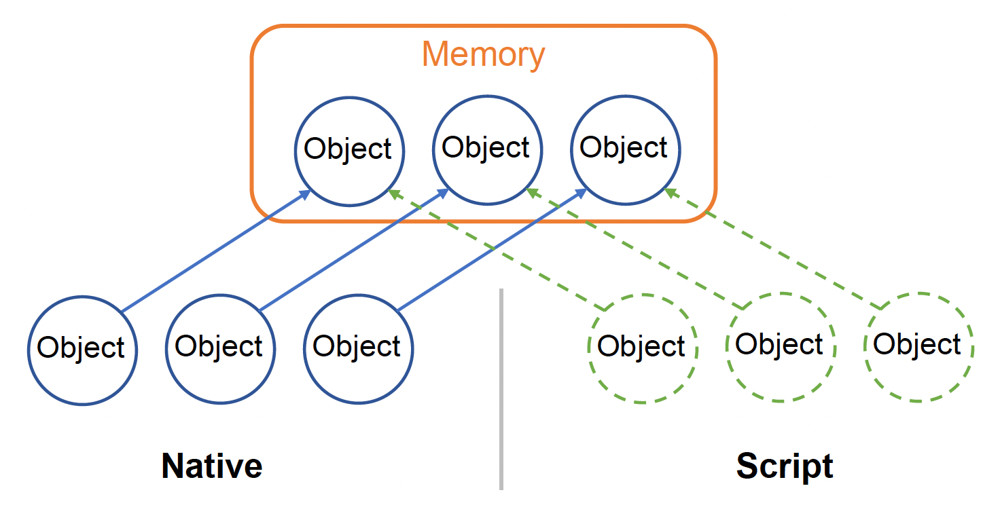
-
脚本
- 对象生命周期由脚本的 GC（垃圾回收）自动管理
- 对象被释放的时间是无法控制的（因为是由 GC 控制的）
- 如果脚本中的引用关系过于复杂，很容易会出现内存泄漏问题
注：由于 GC 算法效率并不是很高，所以可能会影响到性能，因此需做好权衡

适用于脚本系统的架构
-
原生语言主导
- 多数游戏逻辑位于原生代码中
- 脚本扩展原生代码的功能
- 由编译型语言带来的高性能
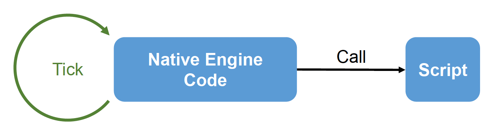
-
脚本语言主导
- 多数游戏逻辑位于脚本中
- 原生引擎代码为脚本提供必要的功能
- 由脚本语言带来的快速迭代能力
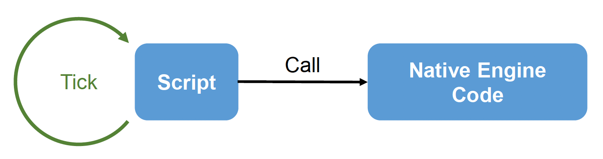
现在关注脚本的另一个功能：热更新
-
允许在游戏运行时修改逻辑
- 可对特定逻辑进行快速迭代
- 允许在线游戏修复脚本中的错误
-
问题：所有引用旧函数的变量也要更新
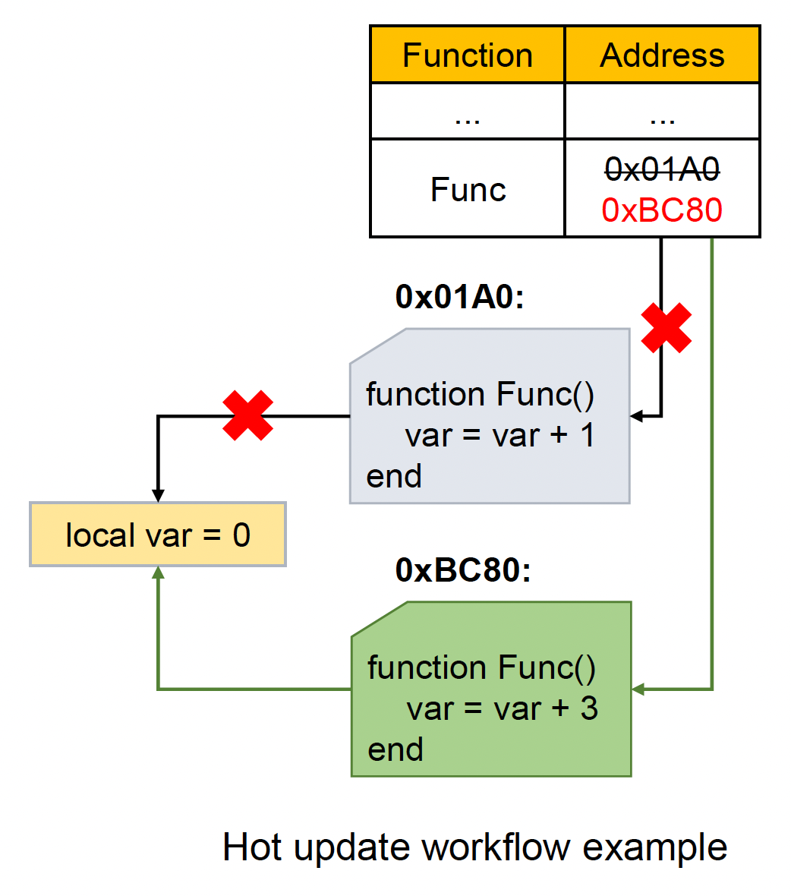
脚本语言的问题
-
性能通常比编译型语言低
- 弱类型语言(weakly typed language)通常难以在编译时优化
- 需要虚拟机运行字节码
- JIT（即时编译）是其中一种优化方案
-
弱类型语言通常难以重构(refactor)
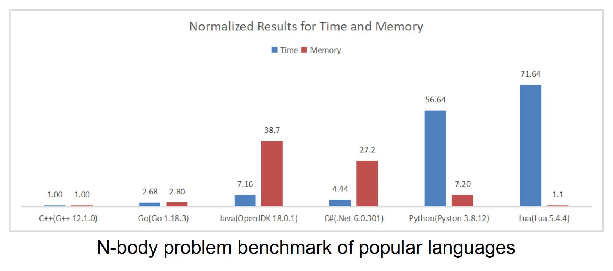
因此，采用脚本语言时需考虑：
- 语言性能
- 内建功能（比如 OOP 支持）
- 选择合适的架构（原生引擎代码/脚本）
- 由谁负责对象生命周期的管理
- 由谁主导游戏逻辑的编写
流行的脚本语言
-
Lua（用于《魔兽世界》《文明 V》等）
- 健壮且成熟
- 优秀的运行时性能
- 轻量级，高扩展性
-
Python（用于《模拟人生 4》《EVE Online》）
- 支持反射
- 内建 OOP 支持
- 丰富的标准库和第三方模块
-
C#（用于 Unity）
- 学习曲线低，易读易理解
- 内建 OOP 支持
- 有很多活跃的开发者的优秀社区
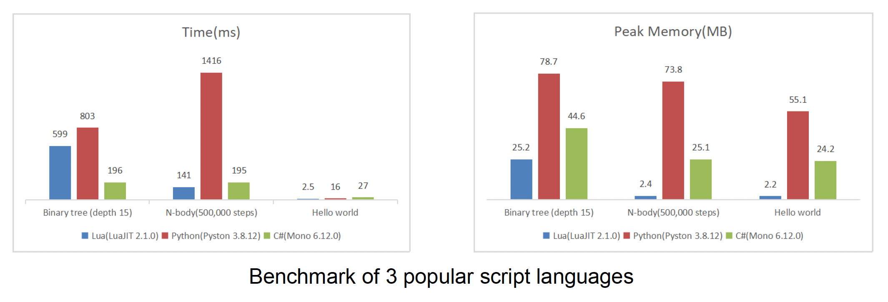
Visual Scripts
为何需要视觉脚本系统
- 对非程序员友好，尤其是设计师和艺术家
- 拖放操作相比写代码更不易出错
例子

不过视觉脚本依然是一种编程语言，因为它通常需要：
-
变量：用于保留被处理和输出的数据
- 类型：基本类型（整数、浮点数等）、复杂类型（结构体等）
- 作用域：局部变量、成员变量...
- 可视化：通过数据引脚(pin)和连线(wire)传递变量（每个数据类型对应唯一的引脚颜色）

-
语句和表达式：控制数据的处理
- 语句：表达需要执行的行动，包括赋值语句、函数语句等
- 表达式：经求解后返回一个具体的值，包括函数表达式、数学表达式等
- 可视化：使用节点(nodes)

-
控制流：控制语句执行的顺序
- 顺序(sequence)语句：默认顺序，一条接一条地执行语句
- 条件(conditional)语句：下一条要执行的语句由条件决定
- 循环(loop)语句：迭代执行语句，直到条件不为真
- 可视化：通过执行引脚(pin)和连线(wire)确定语句顺序，并使用控制语句节点来构建不同的控制流
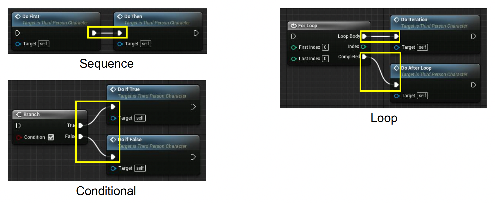
-
函数：接收并处理数据，最后返回结果的逻辑模块，由输入参数、函数体和返回值三部分构成
- 可视化：用带有多个连接节点的图(graph)来表示一个函数

-
类（OOP 语言）：某类对象的原型
- 成员变量：其生命周期由对象实例管理
- 成员函数：可以直接访问成员变量，可被派生类(derived classes)重写(override)
- 可视化：通过蓝图(blueprint)定义一个继承自原生类的类，包括了事件回调函数、成员函数和成员变量等
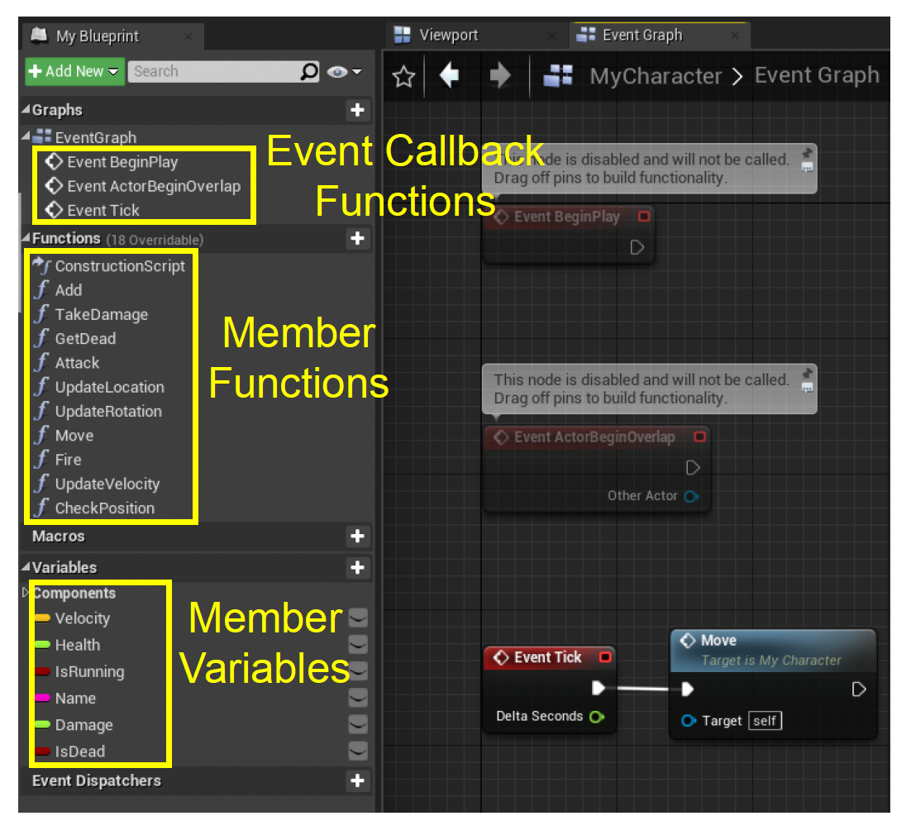
为了对用户更加友好，视觉脚本还提供了以下功能：
-
模糊查找(fuzzy finding)
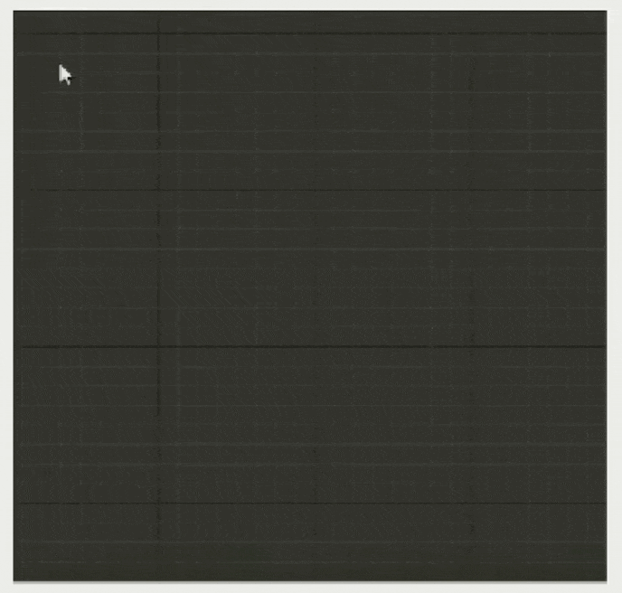
-
根据类型提供精确建议

-
视觉脚本调试器(debugger)

脚本语言的问题
-
在团队工作中，视觉脚本难以合并
- 通常将视觉脚本存储为二进制文件
- 手动重新排序脚本图既不高效又容易出错，即使采用合并工具也是如此
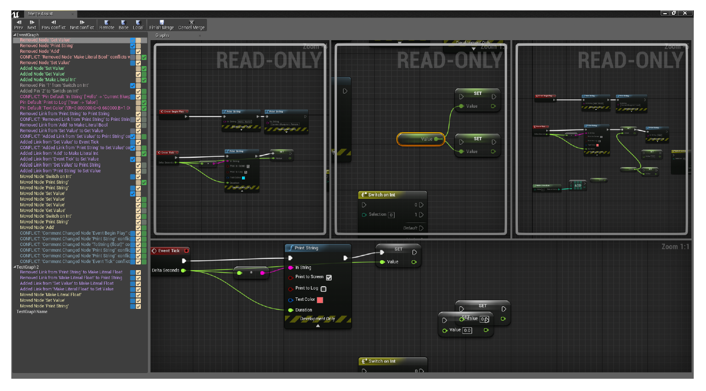
-
若逻辑过于复杂，那么图将会变得一团糟
- 因此在团队工作中，需要有统一的图布局规则
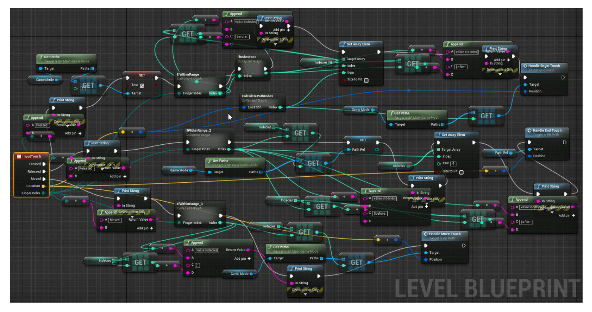
正如其字面意思，视觉脚本可以用等价的脚本语言描述。现在的游戏引擎通过图编译器，直接将脚本图转换为二进制的字节码。
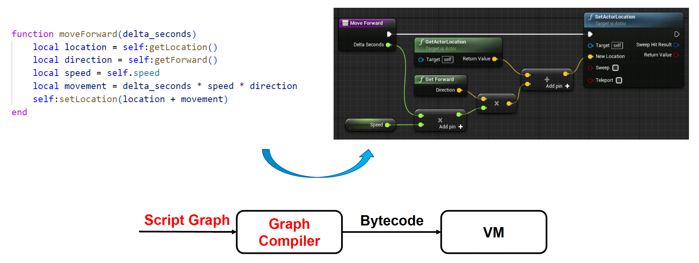
3C
游戏中常说的 "3C" 分别指代角色(character)、控制(control)和相机(camera)，它们是构成游戏玩法的三大基本要素。
例子：《双人成行》

从左往右的三列图片分别对应角色、控制和相机。
后面也会大量采用这个游戏中的例子，因为它的 3C 做得很好。
Character
在游戏中，玩家(player)和 NPC 都属于角色，并且包括移动、战斗、生命值、魔法值(mana)、拥有的技能和天赋等都属于角色的一部分。

下面我们重点关注其中最基本的要素之一：移动(movement)。移动这一操作看起来简单，但想要做好却十分困难。在 3A 游戏中，即便是一个基本的动作状态，也要被划分为多个详细的小状态。
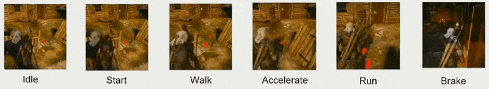
表示移动的状态机

吓哭了😭
在更一般的情况下，还得考虑角色与环境的互动，因而发展出更加复杂和多样的状态。


并且还得考虑和其他游戏子系统的互动，包括各种特效、声音等等。
要想让运动更加真实，还可以考虑各种物理因素，比如气流(airflow)、惯性张量(inertia tensor)、扭矩(torque)等等。
例子

Control
简答来说，控制就是将来自不同输入设备的输入转换为游戏中的操作。

例子

对于上面的例子，在实际操作中，鼠标右键对应瞄准操作，而鼠标左键对应发射操作。无论采用什么样的鼠标，这一操作都能得到精确执行。
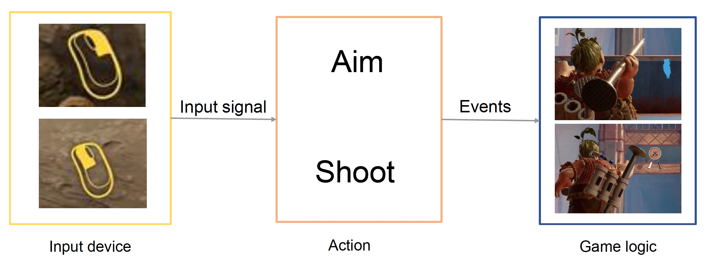
此外，游戏还提供以下表现提升了游玩体验：
- 画面缩放：瞄准时相机对准准心，并且视场缩小，便于瞄准
-
辅助瞄准：提供吸附效果，提升了手感
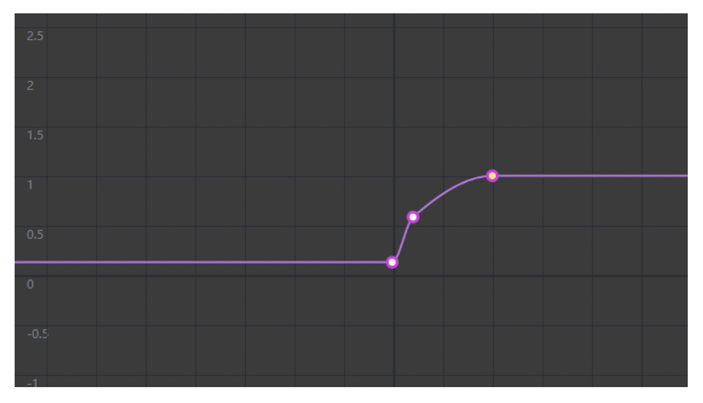
另外，使用手柄的玩家还能感受到手柄震动带来的反馈。

还有一个容易被大家忽视的一点是：即便按下相同的输入按钮，在不同游戏情境下也应该产生不同的效果，这就是上下文敏感的控制(context-sensitive control)。
例子
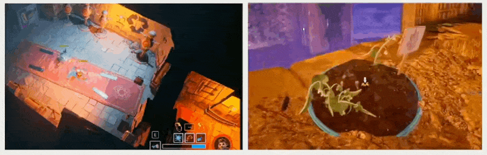
最后介绍一下常见于动作游戏的控制：
- 组合技(chord)：同时按下某些特定按键时产生的独特动作
- 按键序列(key sequence)：通常通过记录玩家执行的 HID（人机交互设备）行动的简短历史来实现姿势检测(gesture detection)
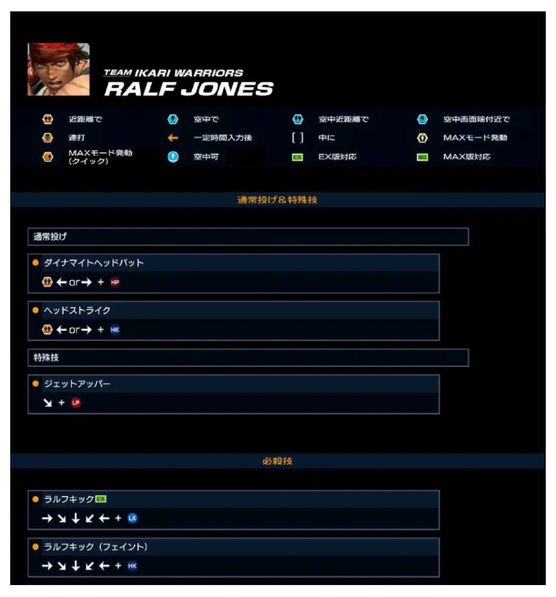
Camera
例子

相机系统的基本要素：
- 视点(point of view, POV)：确定玩家的观察位置
- 视场(field of view, FOV)：确定玩家的视角大小
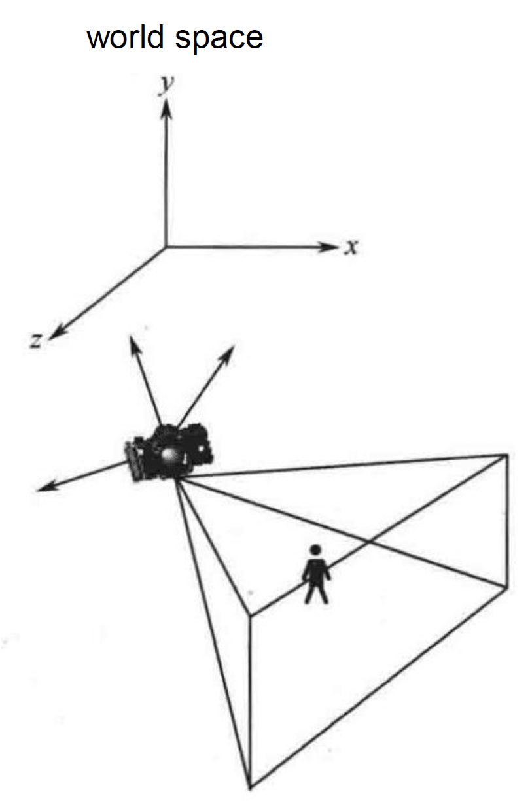
相机往往和角色绑定在一起。但相机离角色的相对位置不是定死的——根据视角的远近，相机的距离远近也会随之改变。
另外还有以下在相机控制中经常出现的概念：
-
弹簧臂(spring arm)：尽量保证相机不会穿墙

-
聚焦(focusing)：改变相机的 FOV

相机系统中一个著名的技术叫做相机轨道(camera track)，即设计师根据角色状态设置相机参数，以表达游戏带给人的各种主观感受。

相机系统还包括相机之外的一些效果，比如滤镜(filter)和抖屏(shake)等。

有些游戏中涉及到多台相机，玩家可在这些相机间来回切换，并且需要有一个相机管理器(camera manager)来管理这些相机。

正如前面所述，相机的一大重要作用是表达游戏带给人的各种主观感受(subjective feelings)。通常需通过多种基本的调整来达到复杂的效果。可以这样调整：
-
表现速度：
- 沿运动方向添加线条
- 角色后倾
- 动态模糊
- 放大 FOV（以体现屏幕内容变化之迅速）
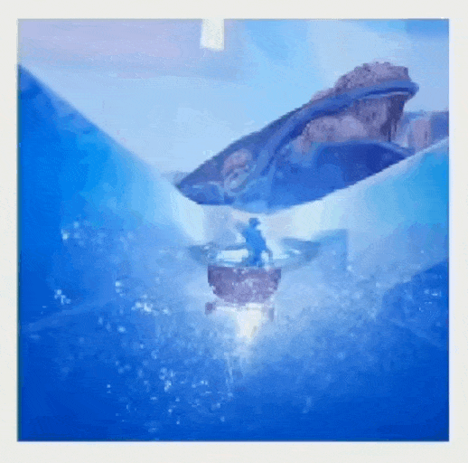
-
表现松弛感：舒缓的相机移动

-
表现电影感：滤镜、运动、声音、叙述者、模型、动画、相机移动...

在游戏引擎中，艺术家和设计师要想优化效果，需利用：
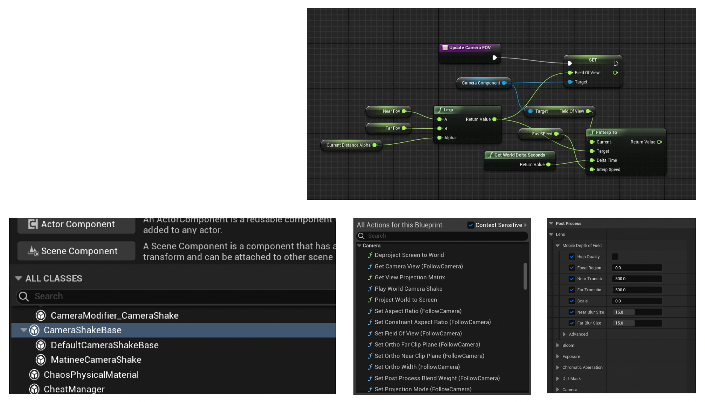
- 可继承的类
- 能被蓝图处理的函数
- 可调整的参数
评论区